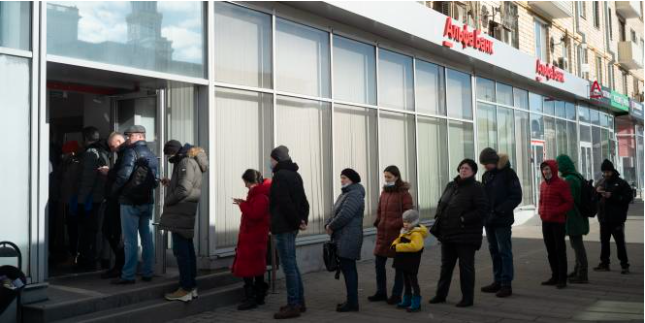
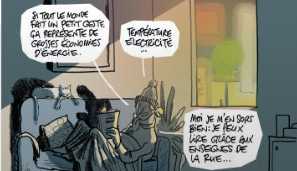

"Au XXe siècle, les sanctions économiques se sont souvent révélées contre-productives"

Dans un entretien au "Monde", l'historien Nicholas Mulder retrace l'histoire des sanctions économiques et s'interroge sur l'efficacité de celles imposiées aujourd'hui à la Russie.

DECRIPTAGE
Allan Kaval
La campagne des Tchétchènes de Kadyrov dans la guerre en Ukraine : violence, impunité et propagande.
Le dirieant du petit territoire du caucase du Nord met en scène l'intervention de son armée personnelle dans la guerre. Sa chaîne Telegram est surtout devenue l'un des principaux canaux de propagande pour l'"opération spéciale"russe.
9 min de lecture